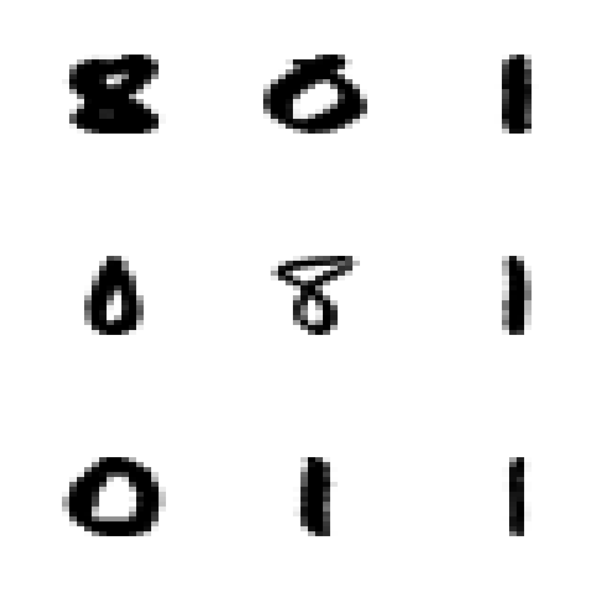

data(vaso, package = "robustbase")
library(MASS)
a.qda <- qda(Y ~ ., data = vaso)12 QDA
Similarly to the way we derived the LDA classifier in class, if one relaxes the assumption that the conditional distribution of the vector of features X in each class has the same covariance matrix (shape) (but still assumes that these distributions are Gaussian), then it is (again) easy to find a closed form for the conditional probability of each class (conditional on a vector of features X). As in the LDA case, these conditional class probabilities (aka posterior probabilities) depend on the parameters of the assumed model for the conditional distributions of X in each class. So, again, we estimate those parameters from the training set (usin the observations in each group) and plug them in to compute the conditional class probabilities.
Similarly to what we did for LDA, it is easy to see that in this case the class boundaries are quadratic functions of the vector of features X.
We illustrate QDA on the same vaso data we used before. We first load the data, and train a QDA classifier using the function qda in package MASS (this can also be written as MASS::qda()).
We now build a relatively fine grid of points in the domain of our 2-dimensional vector of features and use the predict method associated with a qda object to predict the conditional probability of class blue:
xvol <- seq(0, 4, length = 200)
xrat <- seq(0, 4, length = 200)
xx <- expand.grid(xvol, xrat)
names(xx) <- c("Volume", "Rate")
pr.qda <- predict(a.qda, newdata = xx)$posterior[, 2]
image(xrat, xvol, matrix(pr.qda, 200, 200),
col = terrain.colors(100),
ylab = "Volume", xlab = "Rate", cex.lab = 1.5, cex.axis = 1.5
)
points(Volume ~ Rate,
data = vaso, pch = 19, cex = 1.5,
col = c("red", "blue")[Y + 1]
)
contour(xrat, xvol, matrix(pr.qda, 200, 200),
col = "gray30", levels = .5,
drawlabels = FALSE, lwd = 3, add = TRUE
)
We used the function contour above to draw the boundary between classes (the set of points where the probability of blue is equal to the probability of red).
12.1 Sensitivity to the Gaussian assumption
We discussed in class (with the help of a simple example) the sensitivity of QDA to the assumed specific conditional distribution of the features within each class. It is very easy to see that LDA may also be affected by similar problems. This is not at all surprising–in many cases optimal methods obtained under certain conditions are very sensitive to the vailidity of the assumptions used in their derivation.
It is interesting to note (as discussed in class) that logistic regression was not affected by the “good outliers” we included in the data. Considering where these “good outliers” are (in terms of their corresponding likelihood values), this is probably not surprising. Note, furthermore, that both QDA (and LDA) and logistic regression are classifiers that require the estimation of parameters (maybe we can call them parametric classifiers?), and in all cases considered so far the parameters were estimated using maximum likelihood. However their sensitivity to this kind of outliers is very different.
12.2 More than 2 classes – The handwritten digit recognition data
As you may have noted, all the classification methods we have seen so far can be used in applications with an arbitrary number of classes. We will now illustrate them on the well-known Handwritten Digit Recognition Data (as usual, see help(zip.train, package='ElemStatLearn')). We first load the data, and extract the images corresponding to digits 0, 1 and 8. These should be challenging enough to discriminate given their similar shapes.
data(zip.train, package = "ElemStatLearn")
data(zip.test, package = "ElemStatLearn")
x.tr <- zip.train[zip.train[, 1] %in% c(0, 1, 8), ]
x.te <- zip.test[zip.test[, 1] %in% c(0, 1, 8), ]The values of the pixes of each image are in the rows of the corresponding matrix (columns 2:256), and the true class of each image is in the first column. Note that there are relatively few 8’s in this training set:
table(x.tr[, 1])
#>
#> 0 1 8
#> 1194 1005 542To display these 16x16 images we adapt a simple function to plot matrices:
# ----- Define a function for plotting a matrix ----- #
# modified from: http://www.phaget4.org/R/image_matrix.html
myImagePlot <- function(x) {
min <- min(x)
max <- max(x)
ColorRamp <- grey(seq(1, 0, length = 256))
ColorLevels <- seq(min, max, length = length(ColorRamp))
# Reverse Y axis
reverse <- nrow(x):1
x <- x[reverse, ]
image(1:ncol(x), 1:nrow(x), t(x),
col = ColorRamp, xlab = "",
ylab = "", axes = FALSE, zlim = c(min, max)
)
}Next we choose 9 images at random from the training set, and display them in a 3x3 array of images:
a <- x.tr
set.seed(987)
sa <- sample(dim(a)[1], 9)
par(mfrow = c(3, 3))
for (j in 1:9) {
myImagePlot(t(matrix(unlist(a[sa[j], -1]), 16, 16)))
}
par(mfrow = c(1, 1))We can also show the “average 8” in the training set:
myImagePlot(t(matrix(colMeans(subset(x.tr, subset = (x.tr[, 1] == 8), select = -1)), 16, 16)))
# alternatively: myImagePlot(t(matrix(colMeans(a[a[,1]==8,-1]), 16, 16)))We will now use LDA, QDA and a multinomial logistic model. The latter is the natural extension of logistic regression to more than 2 classes. You can easily derive it yourself by assuming that the response variable has a multinomial distribution and modeling each conditional probability as a (different) logistic function of the vector X of features. Note that if there are K classes you only need to model K-1 of these conditional class probabilities. The derivation is left as an easy exercise for you.
Note that the data is stored in a matrix, but the use of lda(), qda(), etc. is clearer when you have your data in a data frame (as you can then refer to features by their names and use the data argument). So, we first transform our matrix into a data frame, and name the resulting variables V1, V2, …, V257:
x.tr <- data.frame(x.tr)
x.te <- data.frame(x.te)
names(x.te) <- names(x.tr) <- paste("V", 1:257, sep = "")Now we use lda and multinom (this last one from package nnet) to train an LDA and a multinomial classifier to these 3-class data:
a <- lda(V1 ~ . - V257, data = x.tr) # x.tr[,1] ~ x[, 2:256])
library(nnet)
a.log <- multinom(V1 ~ . - V257, data = x.tr, maxit = 5000)
#> # weights: 771 (512 variable)
#> initial value 3011.296283
#> iter 10 value 27.327939
#> iter 20 value 8.491334
#> iter 30 value 2.640128
#> iter 40 value 1.228798
#> iter 50 value 0.663474
#> iter 60 value 0.391984
#> iter 70 value 0.212952
#> iter 80 value 0.114876
#> iter 90 value 0.053465
#> iter 100 value 0.026628
#> iter 110 value 0.014534
#> iter 120 value 0.009281
#> iter 130 value 0.006623
#> iter 140 value 0.004210
#> iter 150 value 0.002723
#> iter 160 value 0.001851
#> iter 170 value 0.001318
#> iter 180 value 0.001036
#> iter 190 value 0.000580
#> iter 200 value 0.000516
#> iter 210 value 0.000304
#> iter 220 value 0.000249
#> iter 230 value 0.000218
#> final value 0.000090
#> converged(Question: Why do I remove variable V257 from the models above?)
As a side commment: note how slow is the convergence of multinom. This is not unusual, and it has to do with how neural networks are trained. Refer to the corresponding help page for more information. We will probably discuss this further later in the course.
For now we obtain the predictions on the test set and build a matrix of classification errors for each classifier. For LDA we have:
pr.lda <- predict(a, newdata = x.te)$class
table(pr.lda, x.te$V1)
#>
#> pr.lda 0 1 8
#> 0 353 2 9
#> 1 0 258 0
#> 8 6 4 157For the logistic multinomial classifier we have:
pr.log <- predict(a.log, newdata = x.te)
table(pr.log, x.te$V1)
#>
#> pr.log 0 1 8
#> 0 342 3 13
#> 1 12 258 10
#> 8 5 3 143We now attempt to train a QDA classifier:
a.qda <- try(qda(V1 ~ . - V257, data = x.tr))
#> Error in qda.default(x, grouping, ...) : rank deficiency in group 0
class(a.qda)
#> [1] "try-error"This classifier cannot be trained on these data. The problem is that the training set for at least one class is rank deficient (which can be found by looking at the error message stored in the returned object a.qda
a.qda
#> [1] "Error in qda.default(x, grouping, ...) : rank deficiency in group 0\n"
#> attr(,"class")
#> [1] "try-error"
#> attr(,"condition")
#> <simpleError in qda.default(x, grouping, ...): rank deficiency in group 0>Indeed, we have:
x1 <- x.tr[x.tr$V1 == 0, ]
dim(x1)
#> [1] 1194 257
qr(x1)$rank
#> [1] 254The questions for you are:
- why is this rank deficiency a problem for QDA, but not for LDA, or a multinomial model?
- can we do anything to train a (possibly different) QDA classifier to these data?
12.3 K-Nearest Neighbours (K-NN)
Perhaps the intuitively simplest model-free estimator for conditional class probabilities for a given set of feature values X is the one based on nearest neighbours (as discussed in class). It is similar (in spirit) to the kernel regression estimator in the continuous-response regression setting. More specifically, it can be thought of as a variable-bandwidth kernel estimator. For a point X in the feature space we look at the proportion of observations in each class among X’s K-th closest neighbours. That is, of course, equivalent to looking at all points \((Y_i, \mathbf{X}_i)\) in the training set such that \(\left\| \mathbf{X}_i - \mathbf{X} \right\| \le h_k\), where \(h_k\) is the distance from X to the K-th closest neighbour in the training set. Refer to the discussion in class for more details.
Here we will illustrate K-NN classifiers on the toy vaso example (to be able to visualize the results more easily), and also on the hand written digits data. We will use the function knn in package class. This function takes a training set, and also a test set (i.e. a different data set containing the observations to be predicted). In the example below we first create (as we have done before) a 200 x 200 grid of points and display the resulting predicted probabilities (or the corresponding class with highest conditional probability).
We first we use a trivial 1-NN classifier: the estimated conditional probabilities for each class at a point X, will simply be 0 or 1 depending on the class of the closest neighbour to X in the training set.
library(class)
data(vaso, package = "robustbase")
x1 <- seq(0, 4, length = 200)
x2 <- seq(0, 4, length = 200)
xx <- expand.grid(x1, x2)
u1 <- knn(train = vaso[, c(2, 1)], cl = vaso[, 3], test = xx, k = 1)
u1 <- as.numeric(u1)
image(x1, x2, matrix(u1, 200, 200),
col = terrain.colors(100),
ylab = "Volume", xlab = "Rate", main = "1-NN"
)
points(Volume ~ Rate,
data = vaso, pch = 19, cex = 1.5,
col = c("red", "blue")[Y + 1]
)
We repeat the analysis with a 5-NN classifier. Now the estimated conditional probabilities for each X in the grid can be 0, 0.20, 0.40, 0.60, 0.80 or 1 (why?) The function knn returns the estimated probabilities in the 'prob' attribute of the returned object, so we need to use the function attr to extract it (as usual, the R help pages are a good source of information if you have any questions about the code below):
u5 <- attr(
knn(train = vaso[, c(2, 1)], cl = vaso[, 3], test = xx, k = 5, prob = TRUE),
"prob"
)
image(x1, x2, matrix(u5, 200, 200),
col = terrain.colors(100),
ylab = "Volume", xlab = "Rate", main = "5-NN"
)
points(Volume ~ Rate,
data = vaso, pch = 19, cex = 1.5,
col = c("red", "blue")[Y + 1]
)
We now turn to the digits data. We now look at the images for digits 1, 3 and 8 and create the corresponding training and test sets:
data(zip.train, package = "ElemStatLearn")
data(zip.test, package = "ElemStatLearn")
x.tr <- data.frame(zip.train[zip.train[, 1] %in% c(1, 3, 8), ])
x.te <- data.frame(zip.test[zip.test[, 1] %in% c(1, 3, 8), ])
names(x.te) <- names(x.tr) <- paste("V", 1:257, sep = "")We now train 1-, 5-, 10- and 50-NN classifiers and evaluate them on the test set. We report the misclassification rate on the test set, along with the corresponding tables:
u1 <- knn(train = x.tr[, -1], cl = x.tr[, 1], test = x.te[, -1], k = 1)
table(u1, x.te$V1)
#>
#> u1 1 3 8
#> 1 261 0 0
#> 3 3 162 9
#> 8 0 4 157
mean(u1 != x.te$V1)
#> [1] 0.02684564
u5 <- knn(train = x.tr[, -1], cl = x.tr[, 1], test = x.te[, -1], k = 5)
table(u5, x.te$V1)
#>
#> u5 1 3 8
#> 1 261 1 0
#> 3 3 161 7
#> 8 0 4 159
mean(u5 != x.te$V1)
#> [1] 0.02516779
u10 <- knn(train = x.tr[, -1], cl = x.tr[, 1], test = x.te[, -1], k = 10)
table(u10, x.te$V1)
#>
#> u10 1 3 8
#> 1 261 1 3
#> 3 3 163 12
#> 8 0 2 151
mean(u10 != x.te$V1)
#> [1] 0.0352349
u50 <- knn(train = x.tr[, -1], cl = x.tr[, 1], test = x.te[, -1], k = 50)
table(u50, x.te$V1)
#>
#> u50 1 3 8
#> 1 261 2 7
#> 3 3 159 18
#> 8 0 5 141
mean(u50 != x.te$V1)
#> [1] 0.05872483Note how the performance of the K-NN classifier in this case stops improving when K is larger than 5. Since the number K of nearest neighbours is in fact a tuning constant that needs to be chosen by the user, how would do it in an objective way? What would you do if you didn’t have a test set available?
12.4 Challenges for K-NN classifiers
- It is easy to see that they suffer from the curse of dimensionality.
- Factor or binary features need to be treated with care.
- Euclidean distances do not reflect shape of features in each class (i.e. the conditional distribution of X in each class). Class-wise pre-standardization (whitening) might be useful.
To illustrate the last point, consider this toy synthetic example we discussed in class:
# create example
set.seed(123)
x <- matrix(runif(250 * 2, min = -1, max = 1), 250, 2)
norm2 <- function(a) sqrt(sum(a^2))
r <- apply(x, 1, norm2)
a <- (r > .4) & (r < .7)
x <- x[a, ]
# plot(x, xlim=c(-1,1), ylim=c(-1,1))
l1 <- (x[, 1] > 0)
l2 <- (x[, 2] > 0)
a <- l1 & !l2
b <- l1 & l2
d <- !l1 & l2
la <- rep("C", nrow(x))
la[a] <- "A"
la[b] <- "B"
la[d] <- "D"
# plot(x, pch=la)
x2 <- x
x2[, 1] <- x2[, 1] * 1e5
# plot(x2, pch=la, cex=1.5)
#
# # pick a point
# points(x2[26,1], x2[26, 2], pch='A', col='red', cex=1.9)
# find closest neighbour
x0 <- x2[26, ]
d <- apply(scale(x2, center = x0, scale = FALSE), 1, norm2)
h <- sort(d)[2]
e <- (1:nrow(x2))[d == h]
plot(x2, pch = la, cex = 1.5, xlab = expression(X[1]), ylab = expression(X[2]))
points(x2[26, 1], x2[26, 2], pch = "A", col = "red", cex = 1.9)
points(x2[e, 1], x2[e, 2], pch = "O", col = "red", cex = 1.9)
text(-5000, 0, labels = "Closest neighbour", cex = 1.5, col = "red")
arrows(x2[26, 1], x2[26, 2] + .1, x2[e, 1], x2[e, 2] - .1, lwd = 5, col = "red")
# pdf('knn-challenge.pdf', bg='transparent')
# plot(x2, pch=la, cex=1.5, col='gray30', xlab='', ylab='')
# points(x2[26,1], x2[26, 2], pch='A', col='red', cex=1.9)
# points(x2[e,1], x2[e, 2], pch=19, col='red', cex=3)
# arrows(x2[26, 1], x2[26,2] + .15, x2[e,1], x2[e,2]-.15, lwd=7, col='red')
# text(-5000, 0, labels='Closest neighbour', cex=1.5, col='red')
# dev.off()